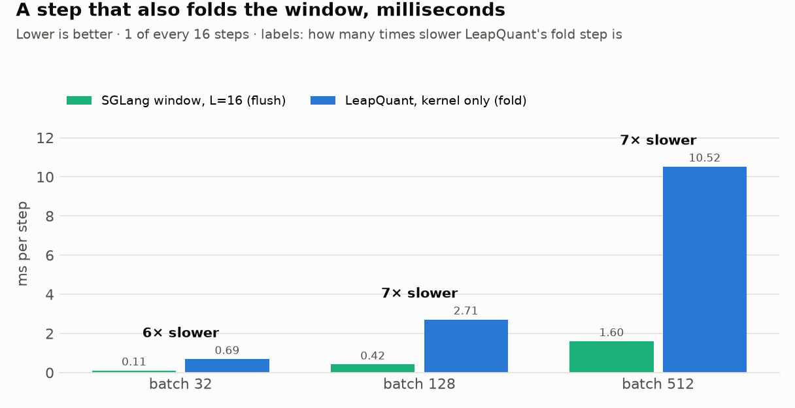
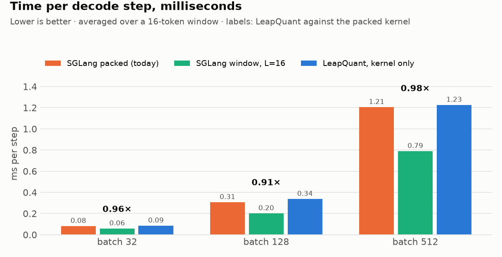
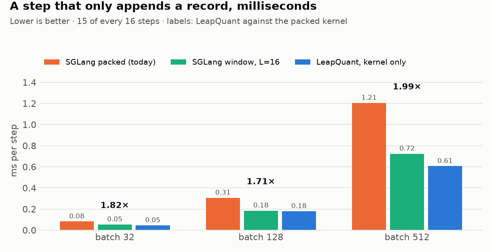
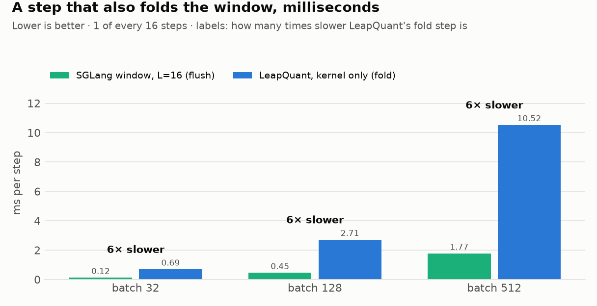

Kernel time per decode step
One decode token for every request of the batch, for one linear-attention layer, on one GPU. LeapQuant next to the two kernels SGLang ships.
Projections in bf16
| Batch | SGLang packed | SGLang window | LeapQuant, kernel only | LeapQuant, with gates | LeapQuant against packed | LeapQuant against window |
|---|---|---|---|---|---|---|
| 32 | 0.0815 | 0.0508 | 0.0855 | 0.1689 | 0.95× | 0.59× |
| 128 | 0.3055 | 0.1788 | 0.3385 | 0.4257 | 0.90× | 0.53× |
| 512 | 1.1999 | 0.6969 | 1.2262 | 1.4630 | 0.98× | 0.57× |

| Batch | Append: packed | Append: window | Append: LeapQuant | Fold step: window | Fold step: LeapQuant |
|---|---|---|---|---|---|
| 32 | 0.0815 | 0.0470 | 0.0452 | 0.1080 | 0.6903 |
| 128 | 0.3055 | 0.1630 | 0.1802 | 0.4153 | 2.7124 |
| 512 | 1.1999 | 0.6366 | 0.6064 | 1.6023 | 10.5228 |
Projections in fp32

| Batch | SGLang packed | SGLang window | LeapQuant, kernel only | LeapQuant, with gates | LeapQuant against packed | LeapQuant against window |
|---|---|---|---|---|---|---|
| 32 | 0.0820 | 0.0584 | 0.0853 | 0.1716 | 0.96× | 0.68× |
| 128 | 0.3070 | 0.2015 | 0.3375 | 0.4264 | 0.91× | 0.60× |
| 512 | 1.2051 | 0.7892 | 1.2262 | 1.4675 | 0.98× | 0.64× |


| Batch | Append: packed | Append: window | Append: LeapQuant | Fold step: window | Fold step: LeapQuant |
|---|---|---|---|---|---|
| 32 | 0.0820 | 0.0543 | 0.0451 | 0.1192 | 0.6884 |
| 128 | 0.3070 | 0.1850 | 0.1796 | 0.4494 | 2.7061 |
| 512 | 1.2051 | 0.7237 | 0.6064 | 1.7712 | 10.5233 |
Complete windows, with the state format of every kernel
Positions 0 to 15 in order, every kernel from the same starting state with empty record buffers (plan 5, step S07). Source: e_full_cycles_bf16.log.
LeapQuant kernel benchmark on cuda: HV=32 H=16 K=128 V=128 window=16 projections=bf16
GPU: NVIDIA H100 PCIe
milliseconds per decode step of one layer, whole batch
complete windows of 16 steps; median of 20 windows; all requests fold on the same step
batch kernel projections / state / records ms per step
32 leapquant, with gates bf16 / int8+fp16 / fp16 0.1805
32 sglang packed bf16 / fp32 / - 0.0828
32 sglang window L=16 bf16 / fp32 / bf16 0.0537
32 sglang packed bf16 / bf16 / - 0.0282
32 sglang window L=16 bf16 / bf16 / bf16 0.0373
32 sglang packed bf16 / fp16 / - 0.0269
32 sglang window L=16 bf16 / fp16 / bf16 0.0374
128 leapquant, with gates bf16 / int8+fp16 / fp16 0.4336
128 sglang packed bf16 / fp32 / - 0.3070
128 sglang window L=16 bf16 / fp32 / bf16 0.1836
128 sglang packed bf16 / bf16 / - 0.1600
128 sglang window L=16 bf16 / bf16 / bf16 0.1053
128 sglang packed bf16 / fp16 / - 0.1590
128 sglang window L=16 bf16 / fp16 / bf16 0.1047
512 leapquant, with gates bf16 / int8+fp16 / fp16 1.4721
512 sglang packed bf16 / fp32 / - 1.2023
512 sglang window L=16 bf16 / fp32 / bf16 0.7058
512 sglang packed bf16 / bf16 / - 0.6151
512 sglang window L=16 bf16 / bf16 / bf16 0.3791
512 sglang packed bf16 / fp16 / - 0.6112
512 sglang window L=16 bf16 / fp16 / bf16 0.3766
Complete windows, with the state format of every kernel
Positions 0 to 15 in order, every kernel from the same starting state with empty record buffers (plan 5, step S07). Source: e_full_cycles_bf16_repeat.log.
LeapQuant kernel benchmark on cuda: HV=32 H=16 K=128 V=128 window=16 projections=bf16
GPU: NVIDIA H100 PCIe
milliseconds per decode step of one layer, whole batch
complete windows of 16 steps; median of 20 windows; all requests fold on the same step
batch kernel projections / state / records ms per step
32 leapquant, with gates bf16 / int8+fp16 / fp16 0.1795
32 sglang packed bf16 / fp32 / - 0.0826
32 sglang window L=16 bf16 / fp32 / bf16 0.0534
32 sglang packed bf16 / bf16 / - 0.0279
32 sglang window L=16 bf16 / bf16 / bf16 0.0376
32 sglang packed bf16 / fp16 / - 0.0272
32 sglang window L=16 bf16 / fp16 / bf16 0.0374
128 leapquant, with gates bf16 / int8+fp16 / fp16 0.4321
128 sglang packed bf16 / fp32 / - 0.3070
128 sglang window L=16 bf16 / fp32 / bf16 0.1832
128 sglang packed bf16 / bf16 / - 0.1598
128 sglang window L=16 bf16 / bf16 / bf16 0.1050
128 sglang packed bf16 / fp16 / - 0.1591
128 sglang window L=16 bf16 / fp16 / bf16 0.1042
512 leapquant, with gates bf16 / int8+fp16 / fp16 1.4710
512 sglang packed bf16 / fp32 / - 1.2023
512 sglang window L=16 bf16 / fp32 / bf16 0.7057
512 sglang packed bf16 / bf16 / - 0.6149
512 sglang window L=16 bf16 / bf16 / bf16 0.3786
512 sglang packed bf16 / fp16 / - 0.6110
512 sglang window L=16 bf16 / fp16 / bf16 0.3761
Complete windows, with the state format of every kernel
Positions 0 to 15 in order, every kernel from the same starting state with empty record buffers (plan 5, step S07). Source: e_full_cycles_fp32.log.
LeapQuant kernel benchmark on cuda: HV=32 H=16 K=128 V=128 window=16 projections=fp32
GPU: NVIDIA H100 PCIe
milliseconds per decode step of one layer, whole batch
complete windows of 16 steps; median of 20 windows; all requests fold on the same step
batch kernel projections / state / records ms per step
32 leapquant, with gates fp32 / int8+fp16 / fp16 0.1807
32 sglang packed fp32 / fp32 / - 0.0837
32 sglang window L=16 fp32 / fp32 / fp32 0.0626
32 sglang packed fp32 / bf16 / - 0.0293
32 sglang window L=16 fp32 / bf16 / fp32 0.0388
32 sglang packed fp32 / fp16 / - 0.0286
32 sglang window L=16 fp32 / fp16 / fp32 0.0388
128 leapquant, with gates fp32 / int8+fp16 / fp16 0.4327
128 sglang packed fp32 / fp32 / - 0.3089
128 sglang window L=16 fp32 / fp32 / fp32 0.2055
128 sglang packed fp32 / bf16 / - 0.1622
128 sglang window L=16 fp32 / bf16 / fp32 0.1193
128 sglang packed fp32 / fp16 / - 0.1617
128 sglang window L=16 fp32 / fp16 / fp32 0.1178
512 leapquant, with gates fp32 / int8+fp16 / fp16 1.4727
512 sglang packed fp32 / fp32 / - 1.2075
512 sglang window L=16 fp32 / fp32 / fp32 0.7957
512 sglang packed fp32 / bf16 / - 0.6255
512 sglang window L=16 fp32 / bf16 / fp32 0.4335
512 sglang packed fp32 / fp16 / - 0.6218
512 sglang window L=16 fp32 / fp16 / fp32 0.4285
What the charts show
- At batch 512, LeapQuant (kernel only) takes 1.23 ms per step: 0.98 times the speed of SGLang's packed kernel and 0.64 times the speed of its window kernel (above 1 is faster, below 1 is slower).
- A step that only appends takes 0.61 ms; a step that also folds takes 10.5 ms. One step in sixteen folds.
- These averages assume all requests fold on the same step.
Setup
32 value heads, 16 key heads, state 128 × 128, window 16, one layer. Timed in one harness (kernel/bench_kernel.py): wall clock around 100 calls after 25 warm-up calls. "With gates" adds the gate and normalisation arithmetic that SGLang's kernels do internally.
What it does not show
End-to-end serving speed, and any other GPU. Source: e_kernel_speed_*.log.
Generated 2026-11-13 23:28 from results/run-quick-einstein-v8-radix, results/fast_checks_v2, results/accuracy-v7, results/s20_ablations, results/gpu-suite by reports/generate_reports.py. All reports.